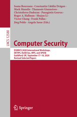

Full Professor · Privacy and Applied Cryptography · Universität der Bundeswehr München

Following our work, Yubico has proposed this protocol for standardisation to W3C WebAuthn Working Group. A talk based on this paper has been accepted to Real World Crypto 2021.
Our protocol from this paper has been used to build the (n+1)sec protocol developed by equalite.ie.